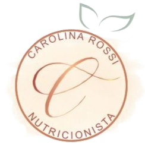

Nutrição que escuta o seu corpo e respeita a sua história. Atendimento nutricional online com abordagem clínica e funcional, focado em saúde intestinal, alergias alimentares e equilíbrio do organismo.
Agendar consulta com nutricionista onlineEu acredito que cada corpo tem sua própria história e aprender a escutar os sinais é o primeiro passo para uma saúde de verdade.
Sou nutricionista formada desde 2008 pela Unisagrado (antiga Universidade do Sagrado Coração), com pós-graduação em nutrição clínica pela mesma instituição e formação em nutrição funcional, atuando com foco em alergias alimentares, saúde intestinal e condições específicas como APLV e doenças renais.
Aqui, o atendimento nutricional online vai além de um plano alimentar: é um olhar individualizado, baseado em ciência, experiência clínica e acolhimento.
Ao longo da minha trajetória, busquei aprofundamento em áreas que hoje são fundamentais na minha prática: nutrição funcional, alergias alimentares e atendimento a pacientes com condições específicas, como doença renal.
Mas além da formação, minha atuação também é marcada por uma vivência muito pessoal: sou mãe de uma criança com APLV (Alergia à Proteína do Leite de Vaca). Foi a partir dessa experiência que meu olhar se tornou ainda mais sensível, empático e aprofundado para o cuidado com pacientes que enfrentam alergias alimentares — especialmente em bebês e crianças.
Hoje, uno conhecimento técnico, prática clínica e experiência real para oferecer um acompanhamento nutricional online completo, humano e individualizado.
Credenciais:
CRN-10: 14.734
Nutricionista desde 2008
Pós-graduação em Nutrição Clínica
Formação em Nutrição Funcional
Formação em Alergias Alimentares
Atendimento em Nutrição para Paciente Renal
O atendimento nutricional online é prático, acolhedor e totalmente personalizado.
Durante a consulta online, vamos conversar sobre sua rotina, sintomas, histórico de saúde, exames e objetivos. A partir disso, elaboro uma estratégia nutricional individualizada — respeitando sua realidade, suas preferências e o que seu corpo precisa.
Você não recebe apenas um “cardápio pronto”, mas sim um plano pensado para ser possível, sustentável e eficaz.
Minha atuação é voltada para o cuidado integral, com foco nas causas — e não apenas nos sintomas.
Acompanhamento de bebês, crianças e adultos com alergias alimentares, com orientação segura, prática e baseada em evidências.
Investigação de sintomas como inchaço, fadiga, alterações intestinais e inflamação, buscando equilíbrio do organismo.
O intestino tem papel central na saúde. Ajustes alimentares estratégicos podem transformar sintomas e qualidade de vida.
Atendimento para diversas condições de saúde com abordagem individualizada.
Plano alimentar adaptado às necessidades específicas para pacientes em tratamento conservador ou dialítico, com cuidado e acompanhamento adequado.
Porque aqui você não é tratado como mais um caso.
A consulta é realizada de forma online, onde avaliamos sua rotina, histórico e objetivos para montar um plano alimentar personalizado.
Sim. O atendimento online permite acompanhamento completo, com orientações individualizadas e suporte contínuo.
Para quem busca praticidade e deseja cuidar da saúde, incluindo casos de alergias alimentares, saúde intestinal e nutrição funcional.
Sim. O acompanhamento é especializado em alergias alimentares, incluindo APLV, com orientação segura e personalizada.
Se você sente que seu corpo está dando sinais — é hora de começar a escutar.
Eu posso te ajudar nesse processo.